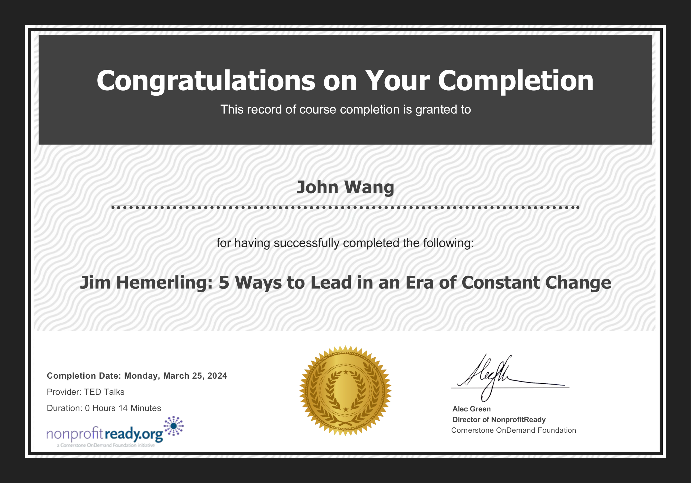
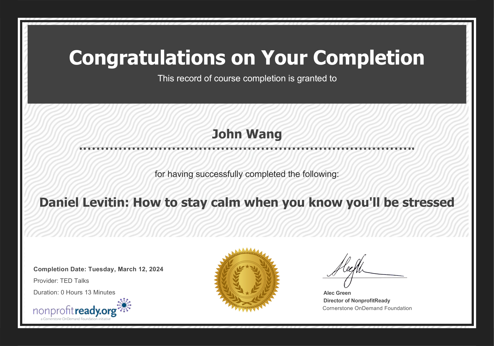
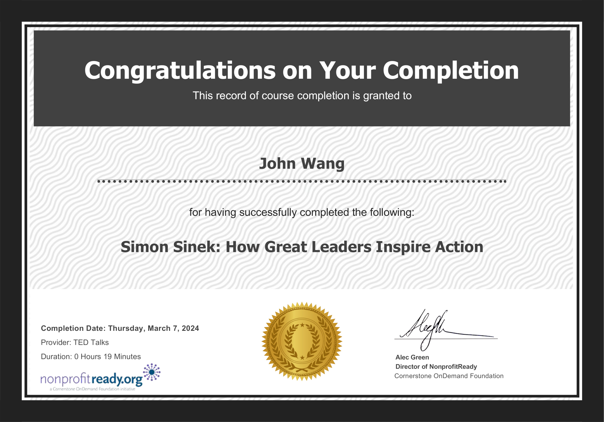

John's TED Talks Certificates
Leadership (2)
5 Ways to Lead in an Era of Constant Change from NonprofitReady by Jim Hemerling

Why Good Leaders Make You Feel Safe from NonprofitReady by Simon Sinek
Hiring (1)
Why the Best Hire Might Not Have the Perfect Resume from TED Talks by Regina Hartley
Mindfulness (2)
All It Takes Is 10 Mindful Minutes from TED Talks by Andy Puddicombe
How to Stay Calm When You Know You'll Be Stressed from TED Talks by Daniel Levintin

Storytelling (2)
The Secret Structure of Great Talks from TED Talks by Nancy Duarte
How Great Leaders Inspire Action from NonprofitReady by Simon Sinek
